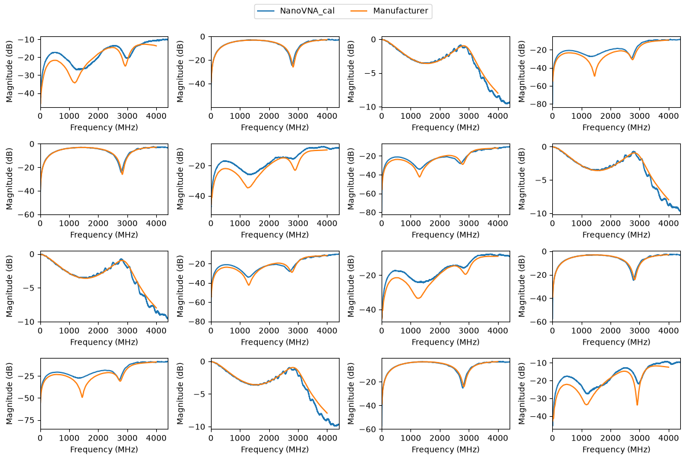

Measuring a 4-Port With The 1.5-Port NanoVNA V2#
The NanoVNA V2 is a 1.5-port VNA, meaning it can only measure the forward reflection and transmission coefficients \(S_{11}\) and \(S_{21}\) with its two ports. This is known as a three-receiver VNA architecture, still, fully-calibrated two-port measurements are possible despite this limitation. We recommend the readers to read Calibration With Three Receivers first to familiarize themselves with the basic background.
In short, to measure the reverse coefficients \(S_{12}\) and \(S_{22}\) of a 2-port, it needs to be measured a second time with the port orientation physically flipped (or fake-flipped), as explained in this example. The issue gets worse if the device under test (DUT) has even more ports, as described in this example.
In this example, a 4-port SMA power splitter is measured with a NanoVNA V2 using the Matched Port technique. It involves measuring the 4-port in all port combinations (12 measurements) with the unused ports terminated with a 50-Ohm match. For the VNA calibration, four more measurements with the SMA calibration standards are required (SHORT, OPEN, MATCH, THROUGH). The manufacturer of the DUT provides measured S-parameters on their website, which will later be used for comparison.
Data Acquisition#
To use scikit-rf’s 2-port calibration classes, such as TwoPortOnePath, the individual measurement results of the DUT and of the calibration standards need to be provided as 2-port networks holding the data as \(S_{11}\) and \(S_{21}\). The following code snippet can be used to configure the NanoVNA, and acquire and save the data:
import skrf
from skrf.vi.vna.nanovna import NanoVNAv2
# connect to NanoVNA on /dev/ttyACM0 (Linux)
nanovna = NanoVNAv2('ASRL/dev/ttyACM0::INSTR')
# for Windows users: ASRL1 for COM1
# nanovna = NanoVNAv2('ASRL1::INSTR')
# configure frequency sweep (for example 1 MHz to 4.4 GHz in 1 MHz steps)
f_start = 1e6
f_stop = 4.4e9
f_step = 1e6
num = int(1 + (f_stop - f_start) / f_step)
nanovna.frequency = skrf.Frequency(start=f_start, stop=f_stop, npoints=num)
# measure all 12 combinations of the 4-port
n_ports = 4
for i_src in range(n_ports):
for i_sink in range(n_ports):
if i_sink != i_src:
input('Connect vna_p1 -> dut_p{}, vna_p2 -> dut_p{} and press ENTER:'.format(i_src + 1, i_sink + 1))
nw_raw = nanovna.get_snp_network(ports=(1, 2))
nw_raw.write_touchstone('./data_MiniCircuits_splitter/dut_raw_{}{}'.format(i_sink + 1, i_src + 1))
The calibration standards should be measured with the same repeated calls of get_snp_network(ports=(1, 2)) and write_touchstone().
Offline Calibration Using TwoPortOnePath#
The measured data transferred from the NanoVNA via USB is always raw (uncalibrated), regardless of any calibration performed on the NanoVNA itself. This requires the correction of the data using an offline calibration. With the measurements of the calibration standards stored as individual 2-ports, a TwoPortOnePath calibration is easily created using scikit-rf. In this example, the impedances and phase delays of the measured SHORT, OPEN, MATCH, and THROUGH are assumed to be ideal, i.e. without any loss or offset:
[1]:
import skrf
from skrf.calibration import TwoPortOnePath
# load networks of the raw calibration standard measurements
short_raw = skrf.Network('./data_MiniCircuits_splitter/cal_short_raw.s2p')
open_raw = skrf.Network('./data_MiniCircuits_splitter/cal_open_raw.s2p')
match_raw = skrf.Network('./data_MiniCircuits_splitter/cal_match_raw.s2p')
thru_raw = skrf.Network('./data_MiniCircuits_splitter/cal_thru_raw.s2p')
# create an ideal 50-Ohm line for the short, open, match and through reference responses ("ideals")
line = skrf.media.DefinedGammaZ0(frequency=short_raw.frequency, z0=50)
# create and run the calibration
cal = TwoPortOnePath(ideals=[line.short(nports=2), line.open(nports=2), line.match(nports=2), line.thru()],
measured=[short_raw, open_raw, match_raw, thru_raw],
n_thrus=1, source_port=1)
cal.run()
The 12 individual 2-port subnetworks can now be corrected with this calibration. For a full correction, the subnetworks with the forward and reverse measurements need to be provided in pairs, for example (\(S_{32}\), \(S_{22}\)) paired with (\(S_{23}\), \(S_{33}\)). A nested loop can take care of this. For the comparison with the measurements provided by the manufacturer, it is convenient to store the calibrated results in a single 4-port network, which can then easily be plotted:
[2]:
import numpy as np
# create an empty array (f x 4 x 4) for the 4-port to be filled
s = np.zeros((len(short_raw.frequency), 4, 4), dtype=complex)
splitter_cal = skrf.Network(frequency=short_raw.frequency, s=s)
# loop through all 12 measurements, apply the calibration and save it inside 4-port network
for i_src in range(4):
for i_recv in range(4):
if i_src != i_recv:
dut_raw_fwd = skrf.Network(f'./data_MiniCircuits_splitter/dut_raw_{i_recv + 1}{i_src + 1}.s2p')
dut_raw_rev = skrf.Network(f'./data_MiniCircuits_splitter/dut_raw_{i_src + 1}{i_recv + 1}.s2p')
dut_cal = cal.apply_cal((dut_raw_fwd, dut_raw_rev))
# dut_cal is now a fully populated and corrected 2-port; save it in splitter_cal
splitter_cal.s[:, i_src, i_src] = dut_cal.s[:, 0, 0]
splitter_cal.s[:, i_recv, i_src] = dut_cal.s[:, 1, 0]
splitter_cal.s[:, i_src, i_recv] = dut_cal.s[:, 0, 1]
splitter_cal.s[:, i_recv, i_recv] = dut_cal.s[:, 1, 1]
The results are now corrected and assembled as a single 4-port network. For comparison, the magnitudes are plotted together with the measurements provided by the manufacturer:
[3]:
import matplotlib.pyplot as mplt
# load reference results by MiniCircuits
splitter_mc = skrf.Network('./data_MiniCircuits_splitter/MiniCircuits_ZX10Q-2-19-S+___Plus25degC.s4p')
# plot both results
fig, ax = mplt.subplots(4, 4)
fig.set_size_inches(12, 8)
for i in range(4):
for j in range(4):
splitter_cal.plot_s_db(i, j, ax=ax[i][j])
splitter_mc.plot_s_db(i, j, ax=ax[i][j])
ax[i][j].get_legend().remove()
ax[i][j].set_xlim(0, 4.4e9)
fig.legend(['NanoVNA_cal', 'Manufacturer'], loc='upper center', ncol=2)
fig.tight_layout(rect=(0, 0, 1, 0.95))
mplt.show()

The calibrated results are pretty close to those from the manufacturer. They apparently used a Keysight N5242A PNA-X (26.5 GHz 4-port VNA) for that measurement. Given the $200 NanoVNA V2 and the sketchy assumptions made for the Matched Port technique (the termination of the unused ports of the DUT have certainly not been entirely free of any reflections), these results are not too bad.